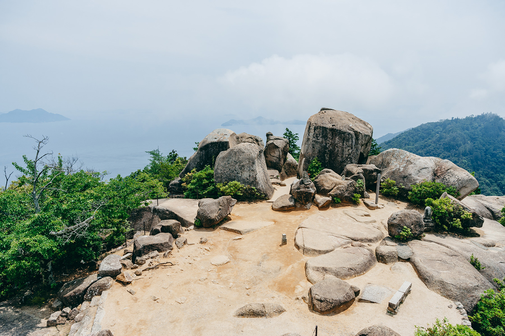
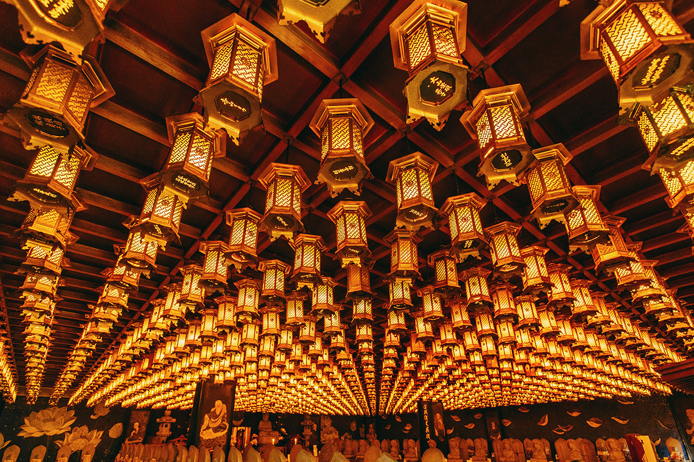
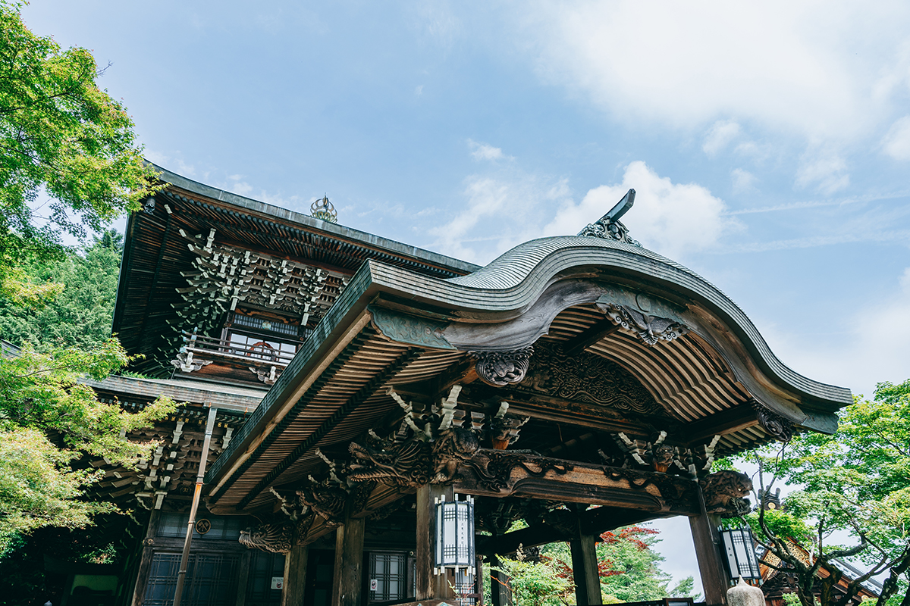
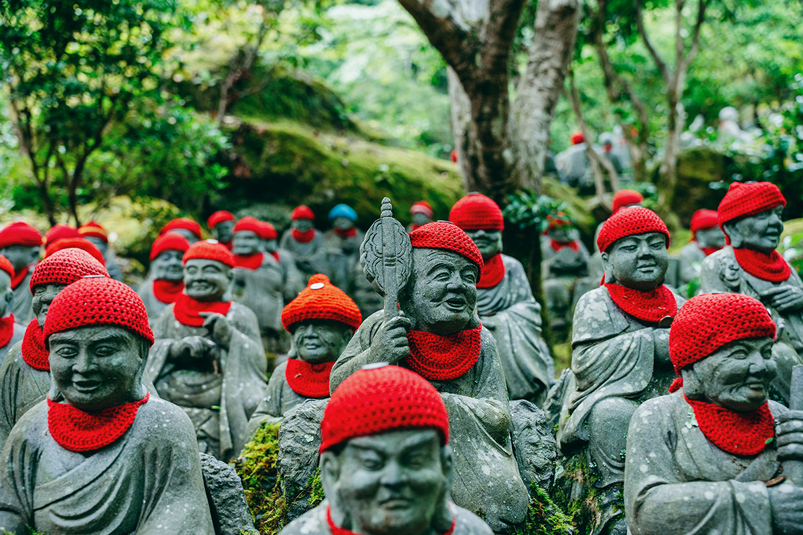
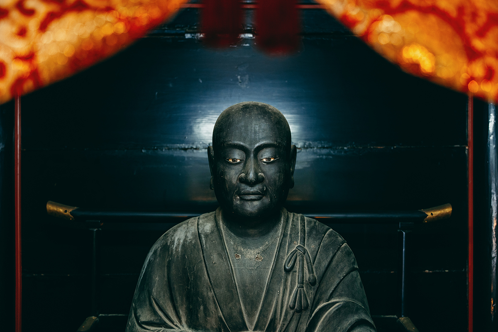
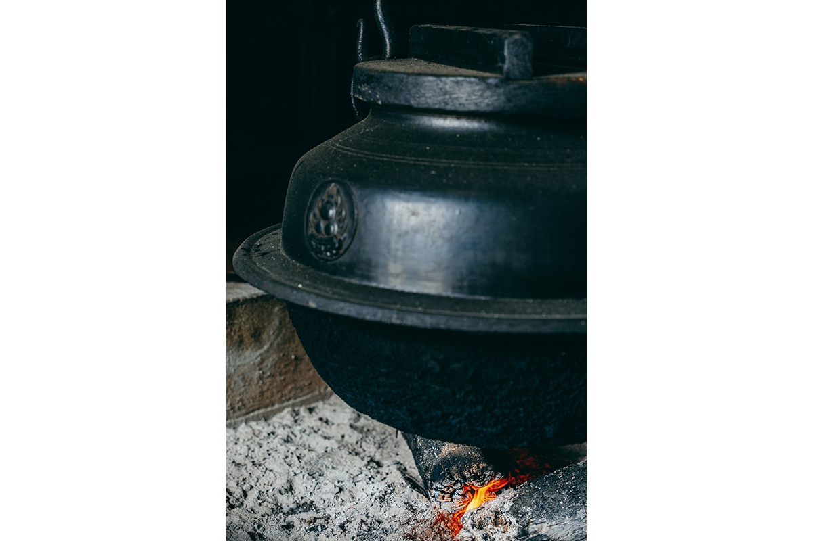
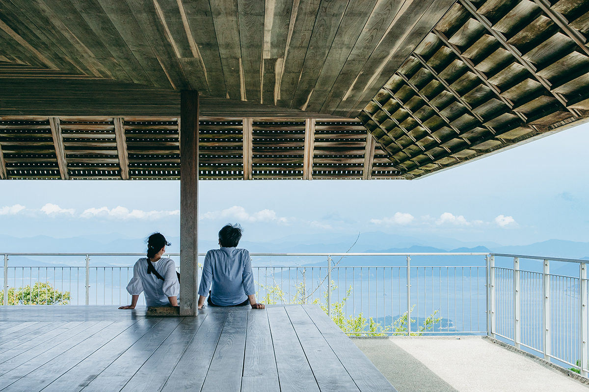
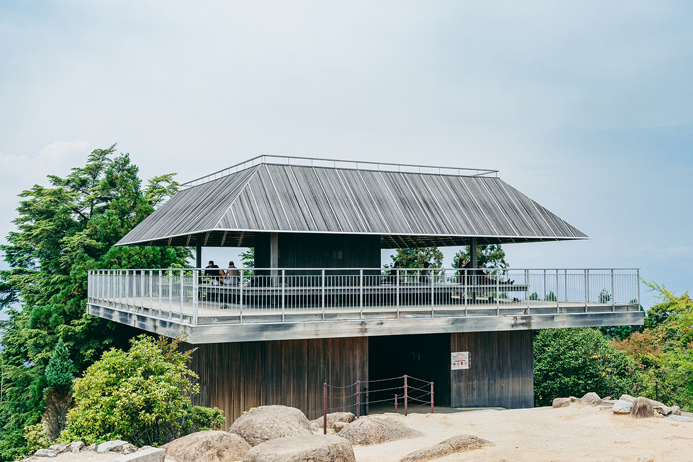

Префектура Хиросима · Миядзима · святыни
Гора Мисэн: тропа паломников к святыням Кобо-дайси

Над островом Миядзима поднимается гора Мисэн. По преданию, здесь набирался сил монах Кукай, основатель школы Сингон, и дал горе имя буддийской вершины мира. Подъём начинается от старейшего храма острова, а на вершину ведут и канатная дорога, и пешая тропа.
Святыня
Гора, на которую поднимался Кукай
Миядзима с эпохи Хэйан связан не только со святилищем у воды, но и с буддизмом. Монах Кукай (774–835), известный также как Кобо-дайси, основатель школы Сингон, вернулся из Китая и по пути в столицу увидел с берега гору на острове. Её пик показался ему похожим на волшебную жемчужину, исполняющую желания, и монах поднялся почти к самой вершине, чтобы построить там молельню и предаться обрядам.
Гору он назвал Мисэн, по имени Сумисэн, священной горы из буддийской картины мира. В 806 году Кукай основал у её подножия храм Дайсё-ин, старейший на острове. В эпоху, когда буддийские и синтоистские обряды шли рука об руку, этот храм был главным при святилище Ицукусима и ведал праздниками, которые ввёл Киёмори Тайра. Гору позже посещал и Эн-но Гёдзя, полулегендарный основатель школы горных подвижников, живший в VII–VIII веках.

Храм
Четыре зала Дайсё-ин
Подъём начинается от храма Дайсё-ин. Четыре его главных зала показывают, сколь разными были здешние верования. В зале Дайсидо чтят самого Кукая, в Каннондо стоит бодхисаттва Каннон с одиннадцатью ликами, в Тёкугандо хранится грозный Фудо, личный оберег Хидэёси Тоётоми, а в Манидэн почитают трёх духов Санки дайгонгэн, хранителей горы, которых, по преданию, призвал сюда Кукай.
Ниже зала Дайсидо есть пещерный зал Хэндзёкуцу. В нём собраны изображения божеств со всех восьмидесяти восьми остановок паломнического круга по Сикоку: обойдя их по очереди, получают ту же заслугу, что и от долгого пути.



Тропа
Огонь, который не гаснет и двести лет
От храма вверх уходит тропа. Полный подъём занимает около полутора часов, вдоль дороги расставлены каменные фигурки бодхисаттв, встречаются молельни. Одна из них, Рэйкадо, хранит огонь, который, как считают, развёл сам Кукай во время обряда и который не гасили больше 1200 лет. От этого огня позже зажгли «Пламя мира» в мемориальном парке Хиросимы, а воду, вскипячённую на нём в огромном котле, здесь считают целебной.

Вершина
Смотровая площадка над Внутренним морем
Гора Мисэн поднимается на 535 метров, её первобытный лес вместе со святилищем входит в список Всемирного наследия. Наверху ждёт смотровая площадка, спроектированная современным архитектором. Её кровлю сделали со щелями, подсмотрев идею у настила галерей святилища, поэтому ветер проходит насквозь. Рядом лежат священные камни ивакура, где, по преданию, спускались боги, а за ними открывается спокойная гладь Внутреннего моря с россыпью островов.
Первый премьер-министр Японии Хиробуми Ито (1841–1909), ревностный почитатель горных духов острова, не раз поднимался сюда и говорил, что настоящая ценность трёх знаменитых пейзажей раскрывается именно с этой вершины.


Добраться до вершины можно двумя способами. Канатная дорога идёт от станции Момидзидани через пересадку до станции Сисиива, а оттуда до пика остаётся около 35 минут пешком. От причала острова до входа в парк Момидзидани идти примерно 20 минут, дальше до станции ходит бесплатный автобус. Пешая тропа от Дайсё-ин занимает около полутора часов.
Дайсё-ин
- Адрес
- префектура Хиросима, Хацукаити, Миядзима, 210
- Телефон
- +81 829-44-0111
- Часы работы
- 8:00–17:00
- Цены
- вход свободный
- Сайт
- daisho-in.com
Канатная дорога Миядзима
- Адрес
- станция Момидзидани, префектура Хиросима, Хацукаити, Миядзима, парк Момидзидани
- Часы работы
- подъём 9:00–16:00, спуск 9:20–16:30
- Цены
- взрослым 2 000 иен туда и обратно (в одну сторону 1 100 иен), детям 1 000 иен туда и обратно (550 иен в одну сторону)
Фото: Юта Того.